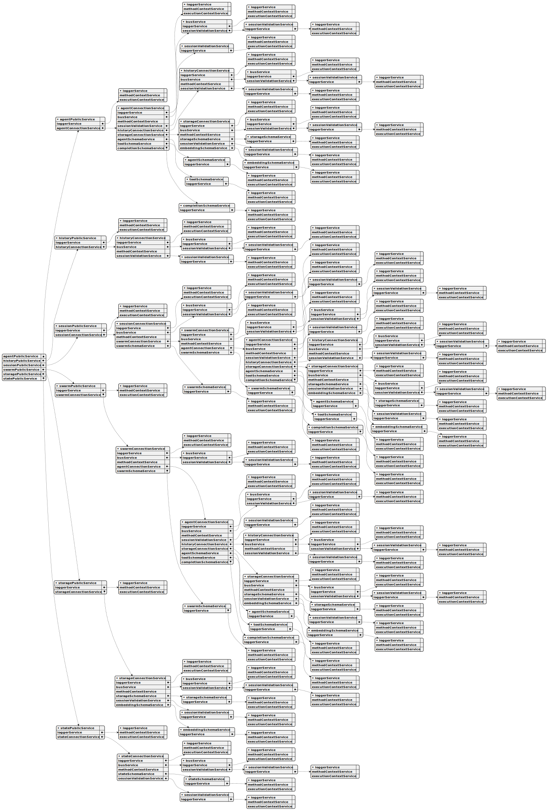

Overall Architecture:
This system built around a distributed, asynchronous architecture. Agents communicate via a message queue, and their interactions are orchestrated through a series of tools and processes. The core concept is to allow agents to perform tasks independently while still being part of a larger, coordinated system.
Core Concepts & Relationships
IAgent is the fundamental building block – the individual agent that executes tasks.IAgentParams interface highlights the importance of the bus (a messaging system) for agents to communicate and coordinate.IAgent and IAgentParams emphasize the agent's ability to operate without relying on conversation history (using the run method).IAgent’s call and execute methods are central to running tools within the agent.IAgentSchema defines the configuration for each agent, including its tools, prompt, and completion mechanism.Interface Breakdown & Key Responsibilities
Here’s a summary of each interface and its role:
IAgent: The core runtime agent. Handles independent execution, tool calls, message commitment, and lifecycle management.IAgentParams: Provides the agent with the necessary parameters for operation, including its ID, logging, communication channel, and history management.IAgentSchema: Defines the configuration settings for an agent (tools, prompt, completion mechanism).IAgentSchemaCallbacks: Provides callbacks for managing different stages of an agent’s lifecycle (init, run, output, etc.).IAgentConnectionService: A type definition for an AgentConnectionService – a service that manages connections between the agents.Workflow Implications
Based on these interfaces, here’s a workflow:
IAgentSchema is created to define the agent’s settings.IAgent instance is created based on the schema.IAgent’s execute method is called to initiate independent operation.IAgent uses call to execute tools.IAgent uses commitToolOutput, commitSystemMessage, and commitUserMessage to manage messages.IAgent uses the bus (via IAgentParams) to communicate with other agents.Key Concepts & Implications:
tools property in IAgentParams indicates a system designed to integrate with external tools.Potential Use Cases:
This architecture could be used for a wide range of applications, including:
This service helps you manage and check the structure of your wikis, ensuring they conform to your defined formats. You can think of it as a librarian for your wikis, keeping track of what they should look like.
First, you need to tell the service about each wiki you want to manage, providing a name and a schema that describes its expected structure. Then, when you have new content for a wiki, you can ask the service to validate it, confirming it matches the defined schema. This helps prevent errors and inconsistencies in your wikis. The service uses a logger to keep track of what’s happening.
This service helps manage and organize different structures or blueprints for wikis, essentially defining how information is organized. It keeps track of these blueprints, allowing you to register new ones, update existing ones, and easily retrieve them when needed. Think of it as a central repository for defining the layout and fields of your wikis. You can add new wiki schema definitions, modify existing ones, and then look them up by name to use them. The service also includes a logging mechanism for tracking events and a validation function to ensure the schemas meet basic requirements.
This service acts as a gatekeeper for the tools used by your AI agents. It keeps track of all registered tools and their configurations, making sure each tool is unique and properly defined.
When a new tool is added, this service records it and verifies that it's not already registered.
The validation process is optimized for speed, so checking if a tool exists is quick and efficient. This service works closely with other parts of the system to manage tool registration, agent validation, and logging any issues encountered.
This service acts as a central hub for defining and managing the tools that agents within the system use to perform tasks. It's like a library of pre-defined actions that agents can access.
Before an agent can use a tool, it needs to be registered here. This process involves a quick check to make sure the tool definition makes sense. You can also update existing tools if needed.
When you need to know what a particular tool does – its call function, validation rules, or how it works – you can retrieve its definition from this service. This information is critical for setting up agents and making sure they can interact correctly within the swarm. It ensures that agents are using well-defined, validated tools for their tasks.
This class helps you manage how to stop ongoing tasks, especially asynchronous ones. Think of it as a way to politely tell a process to stop what it's doing.
It creates and holds onto an AbortController, which is a standard way to signal that an operation should be cancelled. You can use the abort method to actually trigger that cancellation signal.
If your environment doesn’t support AbortController directly, this class handles that gracefully and won't break - it just won't be able to perform the abort action.
This service acts as a central authority for making sure your swarm configurations are set up correctly. It keeps track of all registered swarms and their details, like which agents are part of them and what policies are applied.
When you add a new swarm, this service checks to ensure it’s unique and properly registered. It also provides ways to retrieve lists of agents and policies for specific swarms, which helps with managing those swarms.
The core function is the validate method, which performs comprehensive checks to ensure a swarm is functioning as expected. This includes verifying that essential agents are included and that all associated policies are valid. This service is designed to be efficient and reliable, using clever techniques to avoid unnecessary checks and ensure accurate swarm management.
This service acts as a central place to manage the blueprints for your AI agent swarms. Think of it as a library holding the configurations for each swarm, defining things like the agents involved, default settings, and associated policies.
Before a swarm can be used, its configuration is registered with this service, and a quick check ensures everything looks correct. The service keeps track of these configurations and makes them easily accessible when needed.
You can also update existing swarm configurations, allowing for flexibility in how your swarms operate. This system integrates with other core services, ensuring that swarm configurations are consistent and readily available for various processes, such as setting up swarms, connecting agents, and applying policies. Logging helps track these operations for debugging and monitoring.
This class acts as the main entry point for interacting with a swarm of agents from the outside. It handles requests like sending messages, controlling output, and managing agents within that swarm, all while keeping track of who's doing what and where.
Think of it as a friendly interface that simplifies working with the more complex underlying swarm operations. It provides methods for things like popping navigation stacks, canceling output waits, retrieving agent information, and ultimately, cleaning up the entire swarm when finished. Each action is carefully tracked and logged to ensure everything runs smoothly and can be debugged if needed. This class relies on several other services to accomplish these tasks, making sure everything is coordinated and efficient.
The SwarmMetaService helps manage information about your swarm system and turns it into diagrams you can easily understand. It builds a structured view of your swarm, including details about the agents involved, using data from other services like SwarmSchemaService and AgentMetaService.
Think of it as a translator – it takes the complex data describing your swarm and transforms it into a visual representation, specifically in UML diagram format. This process is useful for understanding how your swarm is organized and for creating documentation.
You can use this service to generate diagrams that show the relationships within your swarm, which can be helpful for debugging and visualizing the system's architecture. It integrates with other services to ensure consistent logging and diagram generation.
This service acts as a central hub for managing connections to AI agent swarms, making sure that connections are reused efficiently. It provides a way to interact with specific swarms, execute agents within them, and handle the communication flow.
It leverages other services within the system to handle agent connections, retrieve swarm configurations, and track performance. Think of it as an orchestrator that ties together all the pieces needed to run agents in a coordinated fashion.
Here's a breakdown of what it does:
getSwarm method provides a streamlined way to get or create connections to individual swarms, ensuring efficient reuse.dispose method cleans up the connection, preventing resource leaks.Essentially, this service provides a consistent and reliable way to interact with and control AI agent swarms within the larger system.
This service helps keep track of the storage configurations used by your AI agent swarm. It acts as a central point for making sure each storage is properly registered and set up correctly.
Think of it like a librarian for your storage systems—it ensures that each one has a unique name and the underlying configurations are valid. It works closely with other services, such as the storage registration and embedding validation services, to make sure everything is working as expected.
You can register new storage systems with this service, and it keeps a record of them. When you need to verify a storage configuration, this service checks that it exists and that its embedding details are also correct, preventing potential issues later on. The service is designed to be efficient, remembering previous validation results to avoid unnecessary checks.
This class provides helpful tools for managing data storage associated with specific clients and agents within the swarm. It allows you to retrieve, add, update, and delete storage items, ensuring proper authorization and registration before any action is taken.
You can use methods like take to fetch a limited set of items based on a search query, upsert to add or update data, and remove to delete items by their unique ID. There’s also a get function for retrieving a single item and a list function to view all items in a storage space.
Additionally, the class includes functions for creating numeric indexes and clearing entire storage spaces. Each operation is carefully controlled to confirm the client’s access and the agent's permissions to work with the specified storage.
The StorageSchemaService acts as a central hub for managing how your agents interact with storage. It keeps track of different storage configurations, ensuring they're set up correctly and consistently. Think of it as a librarian for your storage blueprints.
It uses a special registry to hold these blueprints, verifying they meet basic requirements before adding them. This service is tightly connected to other parts of the system, like those handling storage connections, agent definitions, and public storage APIs, making sure everything works together smoothly. If you enable logging, it keeps a record of when schemas are added, changed, or retrieved. This simplifies managing how your agents store and access information, especially in client-specific and shared storage setups.
This service handles storage operations specifically for individual clients within the swarm system. Think of it as a way to keep client data separate and organized. It’s like having different filing cabinets for each client, instead of one big shared pile.
It works closely with other components like ClientAgent and PerfService, allowing them to easily store and retrieve client-specific data while keeping track of usage. Logging is enabled by default, providing visibility into storage activity.
Here's a breakdown of what it lets you do:
This service contrasts with system-wide storage, ensuring that each client’s data remains isolated and secure.
The StorageConnectionService manages how your AI agent swarm interacts with storage, whether it's specialized for a single client or shared across multiple clients. It’s a central hub for retrieving, updating, and deleting data, ensuring things run efficiently and securely.
Think of it as a smart storage manager: it remembers previously used storage connections to avoid unnecessary setup, and it knows whether a storage area is private or shared.
Here’s a breakdown of what it does:
get, list), updating data (upsert), deleting data (remove), and clearing storage (clear).This service helps you ensure the data your AI agents are working with is consistent and follows a predefined structure. Think of it as a quality control system for your agent's progress.
You define the expected format of different states – like "planning" or "executing" – by providing schemas. The addState method lets you register these state schemas.
Then, when an agent reports its state, you can use the validate method to check if the reported information matches the defined schema, flagging any discrepancies. The service has a logging component to help track and understand these validation results. The _stateMap property internally manages the registered state schemas.
This class helps manage information specific to each client and agent in the system. It provides straightforward ways to fetch existing data, update it, and completely reset it. Think of it as a way to keep track of what each agent knows about a particular client. Before any action is taken, it makes sure the client is authorized and the agent is properly registered, and it logs everything for monitoring. You can either set a direct value for the state or provide a function that calculates the new state based on what's already there.
The StateSchemaService acts as a central place to define and manage the structure of your application's state. It’s like a library of blueprints, ensuring all parts of your system use the same understanding of what constitutes a valid state.
This service stores these blueprints (called "state schemas") and makes them available to different components. It verifies that each blueprint is structurally sound before it's used.
The service works closely with other key areas of your application, such as the parts that handle connections to external services, manage shared state, and execute agent tasks. Logging is enabled to track these actions, giving you visibility into how the system is configured. It's a foundational piece for defining state configurations, making sure that client-specific and shared states operate consistently.
This service helps manage specific pieces of data associated with individual clients within the system. Think of it as a way to keep track of a client’s unique settings or progress. It's different from managing data that's shared across the entire system.
It lets you set, clear, retrieve, and clean up this client-specific data. When setting data, you provide a function to determine the new state, which allows for complex state transitions. The service also integrates with other parts of the system, like the agent handling client interactions and the performance tracking service, ensuring everything works together smoothly. Importantly, all operations are logged to help with debugging and monitoring, though this can be turned off.
This service is responsible for managing how different agents store and access their state within the system. Think of it as a central hub for handling state information—like configurations, data, or any other information an agent needs to function.
It cleverly reuses state instances whenever possible, caching them to improve performance and prevent unnecessary work. It also ensures that updates to the state are handled safely and in a controlled manner.
When an agent needs to get or set its state, this service coordinates various other components – like schema validation and usage tracking – to ensure everything works correctly. Client-specific states are handled directly, while shared states are delegated to a separate service. Finally, it cleans up resources when an agent's work is done. It's like a well-organized librarian ensuring each agent has access to the right state information when they need it, while keeping the entire system efficient and reliable.
This class offers helpful tools for your AI agents to share information and data within the swarm. Think of it as a central repository where agents can store and retrieve important details.
You can use the take method to fetch a specific number of items based on a search, the upsert method to add new information or update existing records, and the remove method to delete items. The get method lets you retrieve a single item by its unique ID, while list provides a way to view all items or a filtered selection. Finally, clear allows you to completely empty a storage area. Each of these operations is handled securely and with proper logging to ensure data integrity.
This service provides a public way to interact with shared storage within the system. Think of it as a central point for agents to store and retrieve data, with built-in logging to keep track of what's happening.
It handles common operations like getting, putting (upserting), deleting, listing, and completely clearing out storage. These actions are carefully wrapped to ensure proper context and logging, and they are used by different parts of the system, including agents and performance tracking tools.
Essentially, this service acts as a controlled and documented gateway for accessing and managing shared data across the entire swarm. It leverages other services for the actual storage operations and for recording activity.
This service manages shared storage for all parts of the system, acting as a central place to store and retrieve data. Think of it as a communal whiteboard where different agents can read and write information, but all using the same shared space.
When you need to access or modify shared data, this service handles retrieving the correct storage area. It cleverly remembers which storage areas it has already set up, preventing it from creating duplicate areas and ensuring everyone uses the same instance.
You can use it to:
The service integrates with other parts of the system to handle logging, configuration, and embedding functionality, keeping everything synchronized and efficient. It also uses events to notify other components when the shared storage changes.
This class provides tools to work with shared information across your agents. Think of it as a central repository where agents can read, write, and reset common data.
You can use getState to get the current value of a specific piece of shared data. setState lets you either directly set a new value for a piece of shared data or provide a function that calculates the new value based on what's already there. Finally, clearState lets you completely reset a specific piece of shared data back to its starting point. All these operations are handled carefully with logging to keep things organized and debuggable.
This service acts as a central point for managing shared data across your swarm system. It allows different parts of your system to interact with and update a common pool of information, offering a standardized way to get, set, and clear this shared data. The system keeps track of these operations and logs them when enabled, ensuring transparency and aiding in debugging. It integrates tightly with other services, like those handling client execution and performance monitoring, providing a consistent approach to state management. Think of it as a shared whiteboard that different agents can read and write to, but with a built-in record of who changed what and when.
This service helps manage shared data across different parts of the swarm system, ensuring everyone's looking at the same information. Think of it as a central whiteboard that multiple agents can read and update.
It keeps track of these shared data areas, making sure each one is properly configured and that updates happen safely, one at a time, to avoid conflicts. It smartly reuses these data areas to be efficient.
You can use it to get the current shared state, update it by providing a function to transform the existing data, or completely reset it to its original form. The service also handles logging these actions and keeps things synchronized with other components within the swarm. This makes it easy to work with shared data in a reliable and predictable way.
This toolkit provides helpful utilities for managing and interacting with shared computing resources within the AI agent swarm orchestration framework.
The SharedComputeUtils class gives you tools to refresh the state of a compute resource and to retrieve data associated with a specific compute resource and client. You can use the update method to ensure your system has the latest information about a compute resource, and the getComputeData method allows you to fetch data, retrieving a structured result based on the client and compute name you specify. This helps you keep track of what's happening with your shared compute environment and ensures your agents have the information they need.
This service manages the connections and computations needed for your AI agent swarm. Think of it as a central hub that allows different agents to request and share computing resources.
It uses a logger to keep track of what’s happening and relies on a separate service to handle the actual connections to the compute environment.
You can request data from specific compute tasks using getComputeData, trigger calculations on the swarm with calculate, and update the state of computations via update. Essentially, this service provides the tools to control and monitor the computational work being done by your AI agents.
This service manages connections to shared computational resources, essentially acting as a bridge for your AI agents to use the same processing power. It’s responsible for fetching and managing references to these compute resources, allowing agents to access them efficiently.
Think of it as a central hub; when an agent needs to do some heavy lifting, this service helps it find the right compute resource and get the data it needs. It handles the complexities of connecting to and retrieving information from these shared resources.
The calculate function allows agents to trigger computations, while update ensures the shared state is refreshed. The service utilizes logging and a messaging bus for coordination and monitoring.
The SessionValidationService is responsible for keeping track of sessions and how they’re being used within the system, ensuring everything is consistent and working correctly. It manages connections, agents, history, storage, states, and swarms associated with each session.
Essentially, it logs and tracks activity related to each session, including which agents and resources (like storage and states) are being used. This helps different parts of the system understand how sessions are being utilized.
It uses a system of maps to store information about each session, keeping records of things like which agents are associated with which sessions and how much storage each session is using. There are methods to add and remove these associations as needed, and everything is logged for monitoring.
The service provides ways to check if a session exists, retrieve session details (like the mode or associated swarm), and even clear out cached data to improve performance. When a session is fully finished, the service can completely remove it from the system.
This service acts as a public interface for managing interactions within a swarm system’s sessions. Think of it as the main point of contact for external components needing to communicate with a specific session.
It leverages several other services – for logging, performance tracking, connecting to the actual session, and emitting events – to ensure operations are properly tracked and integrated with the overall system.
Here's a breakdown of what you can do through this service:
notify or emit, which are useful for asynchronous communication.execute lets you run commands within a session with different execution modes.run is for running stateless completions, like quick suggestions, within a session.connect sets up a real-time messaging channel with performance monitoring and event reporting.commitStopTools allows you to halt the execution of tools within the session.dispose is used to properly shut down a session and release its resources.Essentially, this service provides a controlled and standardized way to interact with individual sessions within the larger swarm environment.
This service manages connections and operations within your AI agent swarm. Think of it as the central hub for individual sessions, handling messaging, execution, and the overall lifecycle of interactions between clients and the swarm. It's designed to be efficient, reusing session data whenever possible, and seamlessly integrates with various other services like agent execution, policy enforcement, and performance tracking.
Here's a breakdown of what it does:
Essentially, this service provides a controlled and efficient environment for your AI agents to interact, ensuring consistency and performance across all sessions.
The SchemaUtils class provides helpful tools for managing how information is stored and shared within the agent swarm system. It lets you easily save data to and retrieve it from a client's session memory, ensuring the system can remember details related to specific interactions.
You can also use this class to convert objects into readable strings, which is useful for things like logging or transmitting data. This serialization process can even handle complex nested objects and offers ways to customize the formatting of keys and values.
This component, called RoundRobin, helps you distribute work evenly across a set of different ways to do things. Imagine you have several different "factories" that can create something, and you want to use them in a rotating order. RoundRobin does just that – it cycles through a list of tokens, each associated with a particular factory, to create instances.
Essentially, it ensures that no single factory is overloaded while others sit idle. The create method is how you set up a RoundRobin, providing the list of tokens and the factory function that knows how to use each token. It then returns a function that will handle the work, automatically rotating through the factories based on the provided tokens. It keeps track of which factory it's using and how many tokens there are, and it can log this information for monitoring if needed.
This service helps ensure policies within your AI agent swarm are correctly registered and can be enforced. It keeps track of all registered policies and their details, preventing duplicates and making sure they exist when needed.
Think of it as a central registry for policies, working closely with other services to register new policies, enforce them, and potentially check them when agents are being validated. It's designed to be efficient, remembering previously validated policies to speed up the process.
You can add new policies to this service, and it will keep a record of them. When a policy needs to be checked, this service will quickly confirm if it's been registered. It uses logging to keep you informed about what's happening and ensures everything is working as expected.
This class provides helpful tools for managing client bans across your AI agent swarm's policies. Think of it as a central place to quickly ban, unban, or check the ban status of a client.
The banClient method lets you easily prevent a specific client from interacting with your swarm, making sure they're following your defined rules under a chosen policy. Similarly, unbanClient removes those restrictions.
If you just need to know whether a client is currently banned, hasBan provides a simple way to check.
Each of these methods includes built-in checks to ensure everything is valid and logs important information about the actions taken.
This service acts as a central place to manage and keep track of the rules and policies that govern how agents operate within the system. It's like a rulebook for the swarm, ensuring everyone follows the same guidelines.
The service stores these rules as "policy schemas," which define things like who is allowed to do what. It uses a special registry to organize these schemas and quickly retrieve them when needed.
Before a new rule is added or an existing one is changed, the system performs a basic check to make sure it's in the right format. The system also keeps a record of these actions for monitoring and troubleshooting.
Other parts of the system, such as the agent execution engine and session management, rely on this service to enforce those rules and ensure consistent behavior across the swarm. Think of it as the foundation upon which access control and restrictions are built.
This service manages how policies are applied and enforced within the swarm system. It acts as a central point for checking if a client is banned, retrieving ban messages, and validating data against specific policy rules.
You can use this service to see if a client is blocked from a swarm, understand why they're blocked, and confirm that data being sent or received meets the defined policy requirements. It also provides functionality to ban or unban clients based on a policy.
The service leverages other components like logging and context management to ensure consistency and provide helpful information about policy-related operations. It works closely with other services like those responsible for performance monitoring and client interaction, making sure policies are consistently applied throughout the system.
This service acts as a central hub for managing policies across the swarm system. It’s responsible for enforcing policy rules related to client access, input/output validation, and ban management. Think of it as a gatekeeper that ensures client actions align with defined policies, using cached policy information to be efficient.
It leverages various other services within the system for logging, event handling, retrieving configuration details, and accessing execution context. When a policy is needed, it efficiently retrieves or creates it, remembering it for future use. You can check if a client is banned, retrieve ban messages, validate incoming or outgoing data, and even apply or remove ban restrictions through this service. It’s designed to be consistent with how policies are handled in other parts of the system, such as managing client agents, sessions, and public API access.
The PipelineValidationService helps you ensure your AI agent workflows are set up correctly before they run. Think of it as a quality control system for your agent pipelines.
You give it definitions of your pipelines—essentially, blueprints describing what each pipeline should do—and then you can tell it to check those pipelines against actual code or configurations.
It keeps track of these pipeline definitions internally and uses a logging service to report any problems it finds during validation.
The addPipeline function lets you register a new pipeline definition, and the validate function is how you kick off the checking process.
The PipelineSchemaService acts like a central library for defining and managing blueprints for your AI agent swarms. Think of it as a place to store and organize the structure of your workflows – how different agents interact and what they do.
It lets you register new workflow structures, essentially adding them to the library, and provides a way to retrieve existing structures. If you need to make small adjustments to a defined structure, you can override specific parts of it. The service also has a registry and a logger for tracking activities, and a validation tool to help ensure the defined structures are well-formed.
This class helps manage how your AI agents and their navigation history are saved and retrieved. Think of it as a central place to keep track of which agent a user is currently using and the path they're taken to get there.
It provides simple methods for getting and setting the active agent for a specific user and swarm, and for managing a stack of agents that represent the user's navigation history. It’s designed to work with different storage options, so you can easily switch between using a database, local storage, or even in-memory storage.
The class is particularly useful when you need to ensure that agents remember the user's choices and actions across different sessions or devices. You can even swap out the underlying storage mechanism to tailor it to your particular needs.
This utility class helps manage how data is saved and retrieved for each client within the swarm system. It focuses on associating data with a specific client ID and a storage name, making it easy to organize and access information.
The class uses a smart caching system (getPersistStorage) to ensure that each storage name only uses one persistent storage instance, which is more efficient.
You can get data from storage using getData, which will return a default value if no data is found. Conversely, setData is used to save data to a specific storage.
For those needing more control, usePersistStorageAdapter allows you to customize how the data persistence actually works, allowing you to use alternative storage mechanisms like databases.
This class helps manage how information is saved and retrieved for each agent in the system. It allows you to store data associated with a specific agent (identified by its SessionId) and a descriptive name (StateName), so that the agent can remember things between interactions.
The class provides simple ways to save (setState) and load (getState) this data, and it automatically optimizes how the storage is handled to avoid unnecessary resource usage.
You can even customize how the data is actually stored, for example, to use a database instead of just memory. This lets you control exactly where and how agent-specific information is persisted.
This class helps manage how the swarm system remembers which clients are blocked, also known as banned clients. It allows you to get the current list of banned clients for a specific swarm, or update that list.
It's designed to efficiently handle this data storage, making sure there's only one persistence instance per swarm to conserve resources.
You can also customize how this data is actually stored – for example, using an in-memory solution instead of a more permanent storage option. This lets you tailor the persistence strategy to your specific needs.
This class helps manage how memory data is saved and retrieved for each user or session in the system. It acts as a central point for persisting information related to a specific user’s context, like conversation history or preferences.
The system uses a clever caching mechanism – a "memoized function" – to ensure that each user’s memory is only stored once, optimizing performance and resource usage. You can set memory data for a user, retrieve it later, or even completely remove it when the session is over.
For advanced users, it's possible to customize exactly how this memory is stored – for example, using a database instead of a simple in-memory solution – which allows for more complex and tailored memory management strategies.
This class helps manage where and how embedding data (numerical representations of text or other data) is stored within the swarm system. It’s designed to make it easy to save and retrieve these embeddings, and to allow for flexibility in how they are persisted – whether that’s in memory, a database, or somewhere else.
The class provides a way to retrieve existing embeddings or save new ones. It cleverly caches embedding data so that the system doesn’t have to repeatedly compute the same embeddings, saving time and resources.
You can even customize how embeddings are stored by providing your own specific storage mechanisms. This allows for advanced tracking and persistent storage beyond the default behavior.
This class helps keep track of which clients are online and offline within your AI agent swarm. It allows you to easily tell when a client has connected or disconnected.
The system remembers the online/offline status of each client, so you don’t have to constantly check. This is managed based on a unique identifier for each client and the swarm they belong to.
You can even customize how this status persistence works, using your own storage mechanism instead of the default. This lets you adapt the system to different needs, like using an in-memory store or a database.
Essentially, it provides a reliable way to monitor client availability and ensures your swarm operations can react accordingly.
The PerfService class is responsible for gathering and logging performance data about client interactions within the agent swarm. It monitors things like how long executions take, the size of input and output data, and the overall state of sessions. It's designed to work closely with other services like validation and public services to provide a comprehensive view of performance.
Essentially, it acts as a performance tracker for your AI agents, collecting information to help you identify bottlenecks and optimize performance.
Here's a breakdown of what it does:
execute and run) to measure performance.IPerformanceRecord and IClientPerfomanceRecord) for reporting and analysis.dispose of data for a client when a session ends.The service relies on several other services (like validation and public services) injected through dependency injection, so it’s heavily integrated into the wider system architecture.
This class represents a single instance of an operator within your AI agent swarm. Each operator instance is identified by a client ID and a name, and it’s configured with a set of callback functions to handle different events.
When you create an operator instance, you’ll provide a client ID and agent name, and optionally, configure how it responds to certain notifications.
The connectAnswer method allows you to subscribe to incoming answers. You can use notify to send a general notification, answer to send a specific answer back to the system, and recieveMessage to handle incoming messages. Finally, dispose gracefully shuts down the operator instance when it's no longer needed.
This service helps manage how agents move around within the swarm, making sure they don't waste time retracing their steps. It keeps track of which agents have already been visited for each client and swarm.
You can think of it as a memory system for navigation, using a special technique called memoization to remember routes efficiently. The getNavigationRoute function is key to this – it provides a way to access or create a route for a client in a particular swarm.
Before an agent moves, the shouldNavigate function checks if that agent has already been visited, preventing unnecessary movement. You can also use beginMonit to reset the navigation tracking for a client and swarm, or dispose to clear the tracking entirely when it's no longer needed. The service integrates with a logger to record what’s happening, which helps with debugging.
This service manages temporary, in-memory data associated with individual sessions within the swarm system. Think of it as a simple scratchpad for each session, allowing agents to store and retrieve information that doesn’t need to be permanently saved.
It provides basic operations like writing data, reading data, and clearing data for each session. This data is easily accessible and is designed for runtime information rather than persistent storage.
The service keeps track of its actions by logging information when enabled, aligning with how other related services handle data and performance monitoring. It’s a lightweight tool that integrates with other system components like session management and agent communication, providing a convenient place to hold session-specific data.
This class helps you keep track of and verify your Model Context Protocols, or MCPs. Think of MCPs as blueprints for how different AI agents communicate.
It acts as a central place to store these blueprints and provides simple methods to add new ones and check if a specific blueprint exists.
You can add new MCP schemas using the addMCP method, and the validate method ensures a particular MCP is registered before use, preventing errors. It relies on a logger to keep track of what’s happening.
This class, MCPUtils, helps you keep the tools available to your clients up-to-date. Think of it as a way to manage what tools each client can use. You can use it to update the tools for every client connected to your system, or just for a single client if you need to. It simplifies the process of ensuring everyone is using the latest versions and configurations.
The MCPSchemaService helps manage the blueprints – we call them schemas – that define how AI agents interact and share information. Think of it as a central place to store and update these blueprints.
It uses a logging system to keep track of what’s happening and stores the schemas in a registry, allowing you to easily find and use them.
You can register new schemas to add to the system, update existing ones with just the changes needed, and retrieve schemas when an agent needs to understand how to communicate. Essentially, it provides a clean and organized way to handle the underlying structure for AI agent interactions.
This class provides a way to interact with Model Context Protocol (MCP) operations, allowing you to manage and utilize tools within a defined environment. You can use it to find out what tools are available, confirm whether a particular tool exists, and actually execute those tools. It also handles cleaning up resources when they're no longer needed. Think of it as the main interface for working with and controlling tools within a larger system. It relies on other services for logging and managing the underlying MCP connections.
This class handles connections and interactions with Model Context Protocol (MCP) services, essentially acting as a central point for managing how AI agents access and use tools. It keeps track of available tools for each client and provides functions to list them, update them, and check if a particular tool exists. You can use it to call specific tools with the necessary input data and receive the output. The class utilizes injected services for logging, communication, method context, and MCP schema management. It also caches MCP instances to improve performance and offers a way to cleanly release those resources when a client is finished.
The LoggerService helps the swarm system keep track of what's happening by providing a way to log messages. It handles different levels of logging – normal, debug, and informational – and ensures these messages are sent to both a general system logger and a client-specific logger, if available.
You can configure exactly what gets logged through system-wide settings. The service uses information about the methods and execution steps to provide context for each log message, making it easier to understand what’s going on.
If you need to change how logging works, you can swap out the common logger at any time, which is useful for testing or custom setups. The service integrates with other parts of the system, like ClientAgent and PerfService, to provide comprehensive logging.
The LoggerInstance class provides a way to manage logging specifically for each client within your system. It lets you customize how logging happens, including whether messages appear in the console and what custom actions are performed.
When you create a LoggerInstance, you give it a unique client ID and optional callback functions to handle different logging events. The waitForInit method makes sure the logger is properly set up, and you can use log, debug, info, and dispose to send messages, handle debugging, and clean up resources respectively. The console output is controlled by a global configuration setting, and you have flexibility to add custom behaviors through callbacks.
This service manages how history information is accessed and handled within the swarm system, providing a public-facing interface for interacting with agent history. It acts as a middleman, coordinating operations with other services like history management, logging, and client agent interactions.
It lets you add messages to an agent’s history, retrieve the most recent message, convert the history into arrays (either for agent processing or raw data access), and clean up the history when it’s no longer needed. All these actions are carefully tracked and logged for debugging and monitoring purposes, and they're designed to work consistently across different parts of the system. It's a key component for tasks like recording agent conversations, retrieving the last action taken, preparing data for agents to work with, and ensuring proper cleanup of resources.
This class helps keep track of conversations and messages for each agent, remembering them even when the system restarts. It stores messages both in memory and on disk, allowing for a reliable history.
When you create an instance, you give it a unique identifier (clientId) and can provide functions to be called during specific operations.
The waitForInit method sets up the history for a particular agent, retrieving any previously saved messages. You can then use iterate to go through these messages, possibly applying filters or system prompts.
Adding a new message to the conversation is done with the push method, which saves it to the history. pop lets you remove and retrieve the last message. Finally, dispose cleans up the history, completely erasing it if needed.
This class helps keep track of messages exchanged with an agent, storing them in memory. It’s designed to be lightweight and doesn't save the history to a file or database.
When you create an instance, you give it a unique identifier (clientId) and can optionally provide functions to be called when messages are added, removed, or read.
You can use waitForInit to set up the history for a specific agent. The iterate method allows you to go through the messages in order, applying any system instructions or filters you’re using. Adding new messages is done with push, removing the last message uses pop, and dispose clears the memory used by the history, completely wiping it if no agent is specified.
This service acts as a central hub for managing the history of interactions with individual agents within the swarm. It's designed to be efficient and keeps track of things like messages exchanged and agent states.
Think of it as a memory system for each agent, where its history – the sequence of messages and actions – is stored and readily available. To avoid unnecessary repetition, it cleverly caches these histories using a technique called memoization, so previously used histories can be reused quickly.
When you need to access or modify an agent's history, this service handles the process, coordinating with other services to track usage, log activity, and ensure everything runs smoothly. It’s also responsible for cleaning up and releasing resources when the history is no longer needed. It provides methods to retrieve the history as a formatted array for the agent or a raw array for external use, and to add or remove messages from the history.
This service acts as a gatekeeper for embedding names used throughout the swarm system. It keeps track of all registered embeddings and ensures that only valid, unique names are used.
When a new embedding is added, this service registers it and makes sure it's not already in use.
When something tries to use an embedding – like performing a similarity search – this service validates that the embedding name actually exists. This validation is done quickly using a caching mechanism.
The service uses logging to record its actions and relies on other services for things like registering embeddings and managing storage.
The EmbeddingSchemaService acts as a central hub for managing how your AI agents understand and process data embeddings – think of it as a library of instructions for calculating similarity and creating embeddings. It ensures these instructions are valid and accessible across your system.
This service keeps track of embedding schemas, which define how embeddings are created and compared. It verifies these schemas to make sure they’re properly formatted, and stores them in a reliable registry.
When components like storage services or agent clients need to work with embeddings (for example, finding similar data or performing searches), they can rely on this service to provide the correct, validated embedding instructions. You can register new embedding methods, update existing ones, and easily retrieve them when needed, all while keeping things organized and consistent. This helps to maintain the integrity of your data processing workflows.
This class is responsible for creating documentation for your swarm system, including details about swarms, agents, and their performance. It automatically generates Markdown files for schema details and JSON files for performance data, making it easier to understand how the system works.
The DocService relies on several other services to gather information, such as services that handle swarm and agent details, performance data, and even UML diagrams. It efficiently manages the documentation generation process using a thread pool to handle multiple tasks at once.
The dumpDocs function is the main entry point for creating documentation, generating files for all swarms and agents. dumpPerfomance and dumpClientPerfomance provide snapshots of system and client-specific performance metrics, respectively. These functions offer a detailed look into the system’s operation and agent behavior.
This class, ComputeValidationService, helps manage and validate the configurations for different computational tasks within your AI agent system. Think of it as a central hub for ensuring your computations are set up correctly.
It holds references to other services that handle logging, state validation, and schema management, making sure everything works together smoothly.
You can add new computational tasks to the system using addCompute, defining their schemas. The getComputeList method lets you see what computations are currently registered. The core function, validate, checks if a specific computation's setup (source) aligns with its defined schema.
This section describes the ComputeUtils class, which provides tools for managing and retrieving information related to compute resources within the agent swarm.
The update function allows you to register or update the status of a specific compute resource, identified by its client ID and compute name. Think of it as telling the system "this compute resource is available and ready to work."
The getComputeData function lets you fetch details about a compute resource. You can specify the client ID and compute name to get back the information you need, and the function is flexible enough to return data of any type.
This service helps manage and organize blueprints for your AI agents – think of it as a central library for defining how your agents should work and interact. It lets you register new agent blueprints, update existing ones, and easily retrieve them when needed.
You can register a new blueprint using the register method, which essentially adds it to the library. If a blueprint already exists, you can modify it with the override method, allowing you to make adjustments without completely replacing the original. The get method then provides a simple way to access a blueprint by its unique key. The service also uses a logger for tracking activities and has an internal registry and validation system for managing the blueprints.
This class, ComputePublicService, acts as a central hub for interacting with and managing compute resources. It's designed to handle requests related to data retrieval, calculations, updates, and cleanup operations for various compute tasks.
Think of it as a facilitator—it relies on another service (computeConnectionService) to actually perform the underlying compute operations and uses a logger to keep track of what's happening.
The getComputeData method fetches specific data from a compute resource. calculate triggers a computation process. update modifies existing compute data. Finally, dispose cleans up resources associated with a particular compute task. Each of these actions is linked to a method name, client identifier, and compute resource name, allowing for precise tracking and control.
This component handles connections and data management for computations within the AI agent swarm. It acts as a central hub, coordinating how different parts of the system interact with and access computational resources.
It relies on several other services – like logging, messaging, context management, schema validation, state management, and shared computation handling – to function correctly.
You can use getComputeRef to retrieve references to specific computations, and getComputeData to fetch the data associated with them. The calculate method triggers computation based on state changes, while update and dispose manage the lifecycle of these computations. Essentially, this service is responsible for ensuring computations happen reliably and efficiently within the larger agent swarm system.
This service helps make sure the names you're using for task completions within your agent swarm are correct and consistent. It keeps track of all the registered completion names, preventing duplicates and verifying their existence when needed.
It works closely with other parts of the system – like the service that registers completion names and the one that validates agents – to ensure everything is working smoothly.
You can add new completion names to this service to keep it updated. And whenever you need to check if a specific completion name is valid, this service provides a quick and efficient way to do so, remembering previous checks for even faster performance.
This service acts as a central place to manage the instructions (completion schemas) that agents use to perform tasks. It keeps track of these instructions, making sure they are in a basic working state before agents can use them.
Think of it as a library of pre-defined actions – each action has a name and a specific way to be executed. Other services, like the agent connection and swarm services, rely on this library to set up and run agents correctly.
When a new instruction is added or an existing one is changed, this service logs that activity, and it makes sure the instructions are properly formatted. It provides a reliable way to access and use completion logic within the entire system.
This class, ClientSwarm, is essentially the brain behind managing a group of AI agents working together. Think of it as a conductor leading an orchestra. It keeps track of which agent is currently active, how they navigate between tasks, and handles all the communication and coordination.
Here's a breakdown of what it does:
Essentially, it's designed to make it easier to orchestrate a group of agents in a controlled and reactive way.
This class handles how data is stored and retrieved within the AI agent system. It’s designed to manage data persistence, allowing agents to store information and search for similar data based on embeddings.
Here’s a breakdown of what it does:
Essentially, it’s the backbone for data management within the agent system, enabling agents to remember information and find related data.
The ClientState class manages a single piece of data within the AI agent swarm, acting as a central hub for reading and writing that data. Think of it as a container with built-in controls to ensure changes are handled safely and consistently.
It keeps track of pending changes, allows for custom logic to be applied before changes are made (middleware), and broadcasts updates so other parts of the system know when something's changed.
It's designed to work closely with other services, making sure the data is properly initialized, synchronized with the swarm, and ultimately cleaned up when no longer needed. You can use it to both get the current state and trigger updates, and it handles the details of making sure these operations are reliable and coordinated. It also ensures that the state initialization happens only once.
The ClientSession manages interactions within a swarm of AI agents for a single client. Think of it as a dedicated workspace for a client’s ongoing conversation with the swarm.
It handles sending messages, validating them against defined rules, and ensuring agents are properly accessed and utilized. The session also keeps track of the conversation history, allowing for context and memory across interactions.
Here's a breakdown of what it does:
Essentially, the ClientSession provides a structured and controlled environment for clients to interact with the AI agent swarm.
The ClientPolicy class is responsible for managing restrictions and security measures for clients interacting with the swarm system. It handles things like banning clients, validating messages they send and receive, and ensuring they adhere to defined policies.
This class keeps track of banned clients, automatically fetching that list when needed and updating it as clients are banned or unbanned. It integrates with other services in the system – like those handling swarm connections, validating messages, and broadcasting events – to enforce the rules. If a client's message doesn't pass validation, it can automatically ban them and provide a specific message explaining why. Essentially, it’s a key component in keeping the swarm secure and compliant by controlling who can participate and what they can do.
This component, the ClientOperator, acts as an interface for coordinating and interacting with a swarm of AI agents. Think of it as a central point for sending instructions and receiving results.
You can use it to pass data to the agents and specify how that processing should happen, although some functions are currently marked as not yet supported. The commit functions are designed to send different types of messages – user input, assistant responses, and system notifications – to the agent swarm. You can also signal changes in the agent configuration and eventually clean up resources when you're finished using the operator. It provides a way to manage the flow of information and actions within your AI agent setup.
The ClientMCP class helps your application work with a collection of AI tools. Think of it as a central hub for accessing and using these tools for different clients.
It keeps track of the tools available to each client, caching them to make things faster. You can ask it to list all tools for a particular client, or check if a specific tool is available.
The class also provides a way to refresh the tool list, ensuring you have the most up-to-date information. When you want to actually use a tool, you can use the callTool method, providing the tool's name and necessary input.
Finally, when a client is finished with the tools, you can release the associated resources using the dispose method.
This class keeps track of the messages exchanged with a particular agent within the swarm system. It acts like a memory for the agent, storing and organizing the conversation history. You can think of it as a log of all the messages sent and received.
It's designed to be flexible, allowing you to filter messages to show only the relevant ones for a specific agent, and it can be customized based on settings defined elsewhere in the system.
You can add new messages to the history, retrieve the most recent message to potentially undo actions, or get the entire history as an array. When the agent is finished, this class cleans up and releases any resources it's using. It's all about managing the agent's conversation for efficient operation and accurate context.
The ClientCompute class is a key part of the system, responsible for managing and coordinating the AI agents within a compute unit. It’s designed to handle the logic for a specific computational task.
When you create a ClientCompute, you provide initial configuration details that tell it how to interact with the agents.
The getComputeData method retrieves information about the current state of the computation. The calculate method kicks off the core processing, telling the agents to work on a particular task based on a given state name. The update method refreshes the computation and ensures everything is running smoothly. Finally, dispose cleans up any resources used by the computation when it's no longer needed.
The ClientAgent is the core of the AI agent swarm, responsible for handling incoming messages and coordinating tool usage. Think of it as the brain of a single agent, processing instructions and interacting with the outside world.
It takes care of a lot under the hood, like managing tool calls, keeping track of history, and handling errors gracefully – if something goes wrong, it can even attempt to recover. The agent uses subjects to manage its internal state, ensuring that changes and errors are handled asynchronously.
Here's a breakdown of what it does:
Essentially, the ClientAgent is a robust and well-managed system for orchestrating the behavior of an AI agent within a larger swarm.
The ChatUtils class is like the central manager for all the chat sessions happening within your agent swarm. It handles creating, managing, and cleaning up these individual chat instances.
Think of it as a factory and a record keeper. It provides a way to get a chat instance ready for a specific client, and it keeps track of all active chats.
You can start a new chat session for a client using beginChat, send messages through sendMessage, and receive notifications when a chat needs to be closed with listenDispose. When a chat is no longer needed, you can safely end it with dispose.
The useChatAdapter method allows you to customize which type of chat instance is used, and useChatCallbacks lets you define how chat instances react to different events. Essentially, it lets you configure the core chat functionality to suit your needs.
This class represents a single chat session within a swarm of AI agents. Each chat instance is identified by a client ID and belongs to a specific swarm. When a chat instance is created, it's given a way to be shut down properly and can receive callbacks for certain events.
The checkLastActivity method verifies if the chat session has been active recently, helping to manage resources and automatically end inactive conversations. beginChat formally starts the conversation. You can send messages to the AI agents using the sendMessage method. Finally, dispose cleans up the resources associated with this specific chat session, and listenDispose allows you to register a function that will be called when that cleanup happens.
The BusService class acts as the central hub for communication within the agent swarm. Think of it as a system for sending and receiving messages, but in a structured and controlled way. It manages who is listening for what kind of messages, and ensures that those messages are only sent to valid recipients.
You can subscribe to specific event types from different clients, or even subscribe generally to all events of a certain type (using wildcards). When an event happens, the BusService makes sure the right people get notified.
It works closely with other parts of the system, like the ClientAgent (which handles client interactions) and the PerfService (which tracks performance). It’s designed to be efficient, reusing communication channels whenever possible, and it keeps a record of who's listening to what to ensure everything is cleaned up properly when needed. Special methods like commitExecutionBegin and commitExecutionEnd simplify common event patterns, making it easier to track execution progress. Finally, when a client disconnects, the BusService cleans up all its subscriptions.
This class helps keep track of which clients are currently active within your AI agent swarms. It allows you to easily signal when a client comes online or goes offline, and importantly, can store this status information persistently so you don’t lose it. You use methods like markOnline and markOffline to update the status, which automatically log the changes and rely on a separate adapter to save the data if configured to do so. The loggerService property gives you access to logging functionality for debugging and monitoring.
This service is responsible for ensuring agents within your system are correctly configured and compatible. It manages agent information, including their schemas and dependencies, and works closely with other validation services to thoroughly check everything.
You can think of it as the central hub for agent validation, registering new agents and verifying their configurations. It keeps track of agent details like storage, wikies, states, and tools, and efficiently checks if they are properly set up. It leverages other services to handle specific aspects like tool validation or storage validation, and uses caching to speed up common checks.
Here's a breakdown of what you can do with this service:
The service uses logging to keep track of its operations, and performs checks to ensure agents exist before attempting to validate them. It's designed to be efficient and reliable, ensuring agents are properly configured within the overall system.
This service acts as a central place to define and manage the blueprints for your AI agents within the swarm. Think of it as a library of agent templates, each outlining what an agent needs to do its job – its capabilities, dependencies, and resources.
It keeps track of these agent blueprints, making them easily accessible to other parts of the system. Before an agent can be created or updated, this service checks to make sure the blueprint is structurally sound.
You can register new agent blueprints, update existing ones, or simply retrieve them when needed. The system keeps a record of these actions, helping you understand how your agents are being configured. It works closely with services that create and connect agents, ensuring they all operate with consistent and validated instructions.
This class, AgentPublicService, acts as the main gateway for interacting with agents within the system. It handles common operations like creating agents, running commands, and managing their history.
Think of it as a wrapper around the core agent connection service, adding extra features like logging and context management. It’s designed to be used by other parts of the system (like ClientAgent) to safely and consistently interact with agents.
Here's a breakdown of what it does:
createAgentRef gets you a reference to an agent, ensuring the operation is properly scoped and logged.execute and run let you send commands to the agent, with execute being for more complex operations and run for quick, stateless completions.commitUserMessage), system messages (commitSystemMessage), assistant responses (commitAssistantMessage), or tool outputs (commitToolOutput). There’s also a way to clear the history entirely with commitFlush.commitAgentChange and commitStopTools allow you to control the agent’s ongoing behavior and prevent unwanted actions.dispose ensures resources used by the agent are properly released.The whole service is designed to be transparent – most actions are logged (when enabled) and executed within a specific context. It’s a key component in ensuring reliable and traceable agent interactions.
This service helps manage information about your agents within the system and transform that information into diagrams. Think of it as a translator, taking the technical details of each agent and converting them into a visual representation, like a UML diagram.
It can create both full, detailed views of an agent's structure, including all its connections and components, or simpler views that focus just on the relationships between agents. It keeps track of dependencies to avoid circular references and uses logging to help with debugging and understanding how the system is working. The diagrams it generates are used to document agents and aid in visualizing their roles and interactions within the overall swarm. This service relies on other parts of the system to get agent details and to handle logging, making it a crucial piece for both documentation and troubleshooting.
This service acts as a central hub for managing AI agents within the system. It efficiently creates and reuses agent instances, caching them to avoid repeated setup. When you need to interact with an agent—whether executing commands, running quick completions, or committing messages to its history—this service handles the low-level details.
Think of it as a smart agent factory and manager. It retrieves pre-configured agents or creates new ones on demand, automatically fetching necessary details like prompt instructions and available tools. It also keeps track of how agents are used for monitoring and cleanup.
It integrates with other services to handle things like logging, event emission, storage, and ensuring agents operate correctly within the overall system. When finished, it cleans up resources used by the agent ensuring efficient operation.
This class provides helpful tools to easily connect to different AI services like Cohere, OpenAI, LMStudio, and Ollama. Think of it as a bridge, letting your application talk to these AI platforms in a consistent way.
You can use the functions within this class to generate a special function that handles the communication with the AI provider of your choice. These functions abstract away the specifics of each platform's API, making it simpler to build your AI agent swarm. You can specify the AI model you want to use and even customize the format of the responses you receive.
This interface lets you signal when an ongoing process should be stopped, similar to how you might cancel a file download. It builds on the standard web API for aborting operations, allowing you to create a more structured and typed way to manage cancellations within your application. Think of it as a way to gracefully shut down tasks when needed, ensuring a cleaner and more controlled execution flow. You can even tailor it further to fit your specific application's needs, adding custom features as required.
This interface, IWikiSchema, defines the structure for representing a wiki within our AI agent orchestration framework. Think of it as a blueprint for how a wiki is organized and how it interacts with the system.
Each wiki has a unique name (wikiName) and can optionally include a description to clarify its purpose (docDescription).
You can also set up custom actions when specific events happen within the wiki by providing callback functions (callbacks).
Finally, the getChat method allows you to send requests to the wiki and receive text responses, effectively letting your agents converse with the wiki's content.
This interface, IWikiCallbacks, provides a way to hook into events happening within a wiki-based AI agent swarm orchestration framework. Specifically, it lets you define a function, onChat, that gets called whenever an agent participates in a conversation or chat interaction. Think of it as a notification system – you can use it to log conversations, monitor agent behavior, or trigger other actions based on what's being said. The onChat function receives arguments detailing the chat event, giving you context about which agents were involved and what was communicated.
This interface lets you define the settings for how an AI agent navigates through different tasks. You specify things like the name of the tool being used, a description of what it does, and even an optional note for documentation. There's also a setting to skip certain outputs when multiple navigation options are available, which helps streamline the process. Essentially, it’s about crafting clear instructions for the AI agent’s movement between different tools and steps.
This interface describes a request to use a tool within the agent system. Think of it as a specific instruction for an agent to run a tool, including which tool to use and what information to pass to it. Each tool call has a unique ID to keep track of it, and currently, all tools are treated as functions. The function property details exactly which function should be called, including its name and the arguments it needs. This structure allows the system to translate the model's desired actions into concrete tool executions.
This interface describes how tools are defined within the AI agent swarm. Think of it as a blueprint for a function an agent can use.
Each tool has a type, which is currently just "function," and detailed function information including its name, what it does, and exactly what parameters it expects.
This definition helps the AI understand what functions are available and how to properly call them, ensuring the right data is passed and the function is executed correctly. The model uses this to generate requests to use those tools.
This interface lets you listen in on what's happening within your AI agent swarm. You can use these callbacks to track when agents join the swarm, when they’re executing commands, and when they’re sending messages. It’s helpful for things like logging activity, setting up custom initialization routines, or monitoring the overall health of your swarm. You can also get notified when a session starts, finishes, or is intentionally shut down.
This interface describes the blueprint for how a swarm of AI agents is set up and managed. Think of it as a configuration file that defines the swarm's personality and how it operates.
You can specify a unique name for the swarm, and a list of agents that will be part of it. It also lets you set a default agent to be used when nothing else is specified.
The interface allows for customization – you can define rules (policies) that govern how the swarm behaves, and set up functions to handle the navigation stack (the path the swarm takes) and the currently active agent. Optionally, the swarm’s state can be saved persistently, so it can resume where it left off. Finally, you can add custom actions for specific lifecycle events.
This interface defines the essential setup information needed to create and run a swarm of AI agents. Think of it as a blueprint for launching your agent team. It requires a unique client identifier, a way to log activity and handle errors, a communication channel for agents to talk to each other, and a list of the individual agents participating in the swarm. It essentially provides the framework for orchestrating the agents and ensuring they can work together effectively.
This interface acts as a central hub for all the essential services within the AI agent swarm orchestration framework. Think of it as a toolbox containing all the components needed to manage agents, track performance, handle connections, and enforce rules. It provides access to services for documentation, event-driven communication, logging, and managing execution contexts. You’re essentially getting a pre-assembled collection of functionalities for agent lifecycle management, data persistence, security policies, and schema definitions. It ensures all these parts work together seamlessly, simplifying how you interact with the underlying system.
This interface outlines how different agents within a swarm connect and communicate with each other. Think of it as a blueprint for establishing those vital links. It’s designed to be a clean, public-facing definition, leaving out any internal workings that aren't directly relevant to how agents interact. This helps keep the core functionality clear and accessible.
This interface lets you hook into important events happening within your AI agent swarm. Specifically, it lets you know when an agent starts or stops being the "active" agent handling a particular task. You can use this information to track how your agents are navigating through a workflow or to update your system’s state based on which agent is currently responsible. Think of it as a notification system for agent activity changes.
This interface lets you control and interact with a group of AI agents working together. You can think of it as a conductor for an AI orchestra.
You can use it to get the name of the agent currently leading the work, or even grab the agent itself to inspect its configuration. The navigationPop method lets you step back to a previous agent in a sequence, and setAgentName lets you choose which agent takes the lead.
If an agent is generating output, waitForOutput retrieves that output, and cancelOutput lets you stop the generation and get an empty result instead. Finally, emit sends messages through the communication channel for the session.
This interface describes how a storage component should behave within the AI agent swarm. It defines settings like whether data is saved permanently, a friendly description for documentation, and whether the storage is accessible by all agents.
You can customize data retrieval and saving with optional functions, and specify the type of indexing used for searching. A unique name identifies each storage within the system, and you have the flexibility to add custom lifecycle event handling. The createIndex method allows you to generate indexes for individual items to improve search capabilities.
This interface defines how your application interacts with the system's storage. Think of it as a set of tools for managing and accessing data, including creating embeddings (numerical representations of text), caching them for speed, and logging events. You’re given a client ID to identify your application, a way to calculate how similar two embeddings are, and methods for writing and reading pre-calculated embeddings to avoid repetitive work. It also provides a logger to keep track of what's happening and a communication channel (bus) for interacting with the broader system. The interface also includes a name for the specific storage you are using and functions to create embeddings for indexing purposes.
This interface describes the basic information held within our system’s storage – think of it as the core data for each item we save. Every piece of data stored will have a unique identifier, called id, which allows us to easily find or delete it later. This id is crucial for managing the data within the framework.
This interface helps define how your application connects to storage services, ensuring a clear and consistent way to interact with them. Think of it as a blueprint for storage connections, focusing on the parts that are meant for external use. It's designed to be used internally to create a more public-friendly version of the storage connection service, keeping the internal workings separate.
This interface lets you listen in on what’s happening with your data storage. You can set up functions to be notified whenever data is changed, searched for, or when the storage itself is being created or shut down. These notifications are great for tracking activity, making sure everything stays consistent, or performing any necessary cleanup tasks. Think of it as a way to get alerts about important events related to your data.
This interface lets you manage data within the AI agent swarm's memory. You can fetch items from storage using a search term and a desired number of results, essentially finding things that are similar to what you're looking for.
You can also add new data or update existing data—the system handles keeping everything organized. If you need to remove something, you can identify it by its unique ID.
Retrieving a specific item is easy if you know its ID, and you can even list all items, or a specific subset of them, based on certain criteria. Finally, there's a way to completely empty the storage, effectively wiping it clean.
This interface describes how a piece of information, or "state," is managed within the agent swarm. Think of it as a blueprint for how the swarm remembers and uses data.
You can choose whether the state is saved permanently, provide a description for documentation, and decide if multiple agents can access and share it. Each state has a unique name to identify it within the system.
The framework provides ways to define how the initial state is created and how to retrieve or update it. You can even add custom logic – using middleware functions or callbacks – to fine-tune the state's behavior during different phases of its lifecycle.
This interface defines the information needed to manage a particular state within the AI agent swarm. Think of it as the core data package that tells the system who is using the state, how to log actions related to it, and how it can communicate with other parts of the swarm. Each state instance will have its own set of these parameters, identifying the client, providing logging capabilities, and enabling messaging between agents. It's essentially the glue that connects a state to its environment within the larger system.
This interface defines how you can hook into the agent swarm's internal state changes. Think of it as a way to observe or even adjust the data flowing through the system as agents interact and progress. You can use this to validate the state, ensure it's in a consistent format, or even make adjustments before it's used for decision-making. It’s a powerful mechanism for controlling and monitoring the overall health and behavior of your agent swarm.
This interface outlines the public methods and properties available for managing connections to a system's state. Think of it as a blueprint for how other parts of the system interact with the state management layer. It's designed to clearly define what's exposed externally, hiding the underlying implementation details and internal workings. It ensures a consistent and predictable way for components to connect and retrieve information related to the system's state.
This interface, IStateChangeContract, defines how changes in an agent's state are communicated within the swarm orchestration framework. Specifically, it provides a mechanism for observing when an agent's state has been modified. The stateChanged property allows other components to react to these state updates, enabling coordination and synchronization across the swarm. Think of it as a notification system that signals when an agent’s status changes.
This interface lets you listen in on what’s happening with your agent swarm’s state. Think of it as a way to get notified whenever a state is created, cleaned up, loaded, read, or updated.
You can use these notifications, for example, to log important events, perform setup tasks when a state begins, or clean up resources when it ends. Each callback gives you the state's identifier, its name, and the data itself, allowing you to react to state changes in a flexible way.
This interface lets you manage the current working state of your AI agent swarm. You can use getState to see what the current state looks like, fetching any custom logic or processing applied along the way. When you need to update the state, setState lets you calculate the new state based on the previous one, ensuring everything stays consistent. Finally, clearState provides a quick way to reset the state back to its original, default value, effectively starting over.
This interface outlines how your system can connect to a shared storage space, essentially acting as a blueprint for services that need to read from and write to that space. Think of it as a standardized way for different parts of your AI agent swarm to access and share information persistently. It's designed to make sure the public-facing parts of the storage connection service only expose what's necessary, keeping internal workings hidden. By using this interface, you can build reliable and predictable storage connections for your agents to collaborate.
This interface helps define how different parts of the AI agent swarm can share information with each other. Think of it as a blueprint for a service that manages this shared data. It's designed to be a clear, public-facing way to connect and exchange state, while hiding some of the technical details used internally. By using this interface, we ensure that the way agents connect and share information is consistent and well-defined.
This interface defines how different AI agents in your swarm can connect and share computing resources. Think of it as a standardized way for agents to request and utilize processing power, memory, or other hardware capabilities from a central pool or from each other. By implementing this service, agents can dynamically access the resources they need to perform their tasks, improving efficiency and flexibility within the swarm. It provides a clear contract for establishing and managing these shared computing connections, ensuring all agents can participate in resource sharing seamlessly. The service handles the details of connecting, authorizing, and managing access to these shared compute resources, allowing agents to focus on their primary functions.
This interface, ISessionSchema, acts as a reserved space for any future settings or data we might want to associate with individual sessions. Think of it as a blueprint for how sessions will be structured, even though it's currently blank. As the framework evolves, we’ll be adding details here to define what information each session holds and how it’s organized. It ensures we have a consistent way to handle session data when the time comes.
This interface outlines all the essential information needed to kick off a new session within your AI agent swarm. Think of it as the blueprint for creating a session – it bundles together things like a unique identifier for the client using the session, a way to track what's happening during the session for debugging or monitoring, rules that govern how the session operates, a communication channel for agents within the swarm to talk to each other, and the overall swarm managing everything. It makes sure all the necessary components are in place before a session can begin. The session gets linked to a specific swarm by its name, ensuring proper organization and management.
This interface describes the information held for each active session within the system. Think of it as a container for details about who is using the system, what they're trying to do, and the specifics of their current operation.
It bundles together the client's identifier, a unique process ID, details about the method being used, and information about the current execution. Essentially, it provides a complete picture of a single session's state and progress.
You'll find key identifiers like the client ID and process ID, plus the method and execution context if they exist.
This interface helps define how different parts of the system connect and interact within a session. Think of it as a blueprint for managing connections, but specifically tailored to avoid including internal details that aren't meant for outside use. It's designed to ensure that the publicly accessible connection service behaves predictably and consistently.
This interface, ISessionConfig, helps you control how often or when your AI agents are allowed to run. Think of it as a way to manage the flow of work for your swarm. You can use the delay property to specify a waiting period between sessions, ensuring your agents don't overwhelm resources. The onDispose property lets you define a function to execute when a session is finished, allowing for cleanup or logging actions. Essentially, it provides a way to pace and manage your agent activity.
The ISession interface is the central hub for interacting with a single conversation within the AI agent swarm. Think of it as a dedicated workspace for a specific interaction.
You can use commitUserMessage to add what the user has said to the conversation log. commitAssistantMessage allows you to add a response from the AI agent. commitSystemMessage lets you add important instructions or information that affects the overall session.
Need to clear the agent’s memory? commitFlush resets the conversation history. Want to prevent the AI from using a tool? commitStopTools puts a stop to the next action.
For quick, one-off calculations that don’t need to be part of the conversation history, there's run. execute actually runs a command within the session and can modify the conversation history depending on the chosen mode.
notify sends messages to anyone who's listening in on the session. emit is a general way to send messages across the conversation channel.
connect establishes a two-way communication line to send and receive messages. Finally, commitToolOutput allows you to record what tools have generated.
This interface defines the structure for configuring how a policy operates within the AI agent swarm. It lets you customize rules, manage banned clients, and even define how ban messages are presented.
You can choose whether to save the list of banned clients persistently. It also includes fields for a descriptive name, a default ban message, and options for automatic banning.
To enable highly customized behavior, you can provide functions to generate unique ban messages, retrieve the current list of banned clients, or set that list manually. You have the ability to implement custom validation rules for incoming and outgoing messages, and to define callbacks for specific policy events, giving you granular control over the swarm's security and behavior.
This interface defines the information needed to set up a policy within the AI agent swarm. Think of it as a blueprint – it outlines the essential components like a logger for tracking what's happening and a communication bus to allow different agents to talk to each other. It allows for both recording policy actions and errors, and ensures agents can share information seamlessly. Essentially, it's all about having the right tools and connections to build a well-functioning policy.
This interface helps us create a clear, public-facing definition for services that manage connections based on policies. Think of it as a blueprint – it lays out exactly what operations and data these services should expose, without including any internal workings. It’s designed to make sure the external view of these services is consistent and predictable.
This interface provides a way to listen in on key moments in a policy’s life – from when it's first set up, to when it checks incoming and outgoing messages, and even when a client is banned or unbanned. You can use these callbacks to add your own custom logic, like logging events, setting up monitoring, or taking specific actions based on policy behavior. Specifically, you'll find hooks for the policy's initialization, for validating both what comes in and what goes out, and for handling client bans and unbans. Each callback provides information like the policy name, client ID, and swarm name, giving you context for your actions.
This interface defines how your AI agent swarm enforces rules and keeps things secure. It lets you check if a client is blocked, find out why they were blocked, and decide whether messages coming in or going out are allowed. You can also use it to ban clients, effectively stopping them from participating, or unban them to let them rejoin the swarm. Think of it as the gatekeeper for your AI agents, ensuring only authorized communication happens.
This interface defines the structure for a pipeline within your AI agent swarm orchestration framework. Think of it as a blueprint for how a series of agents will work together to accomplish a task.
Each pipeline has a descriptive name, identifying what it does. The execute function is the key – it's what you call to actually run the pipeline, providing a client identifier, some initial data (payload), and the name of the starting agent. The pipeline will then handle the coordination between agents.
Finally, you can optionally provide callbacks to be notified about key events happening within the pipeline's execution, giving you more control and insight.
This interface defines a set of optional callback functions you can use to monitor the lifecycle of your AI agent pipelines. Think of these as notification hooks – you can provide them to get updates on what's happening.
The onStart function is triggered when a pipeline begins execution, giving you information about the client initiating it and the pipeline’s name along with any data passed along. onEnd lets you know when a pipeline finishes, indicating success or failure. Finally, onError is called if something goes wrong during the pipeline's run, providing details about the error that occurred. You're free to use just some of these callbacks, or all of them, depending on how much visibility you need into your pipelines.
This API lets you tailor how your AI agent swarm's data is saved and loaded. You can plug in your own storage solutions, like databases or in-memory systems, to manage the information about which agents are active and the paths they're exploring.
Essentially, it gives you control over where and how the swarm's core data is persisted, letting you customize the storage mechanism for active agents and navigation histories. This is useful if you need something beyond the default persistence behavior.
This interface describes how to package up data that needs to be saved for later use within the AI agent swarm. Think of it as a container for a list of items – like a collection of key-value pairs or records – that you want to store and retrieve. The data property holds that list of items, making it easy to manage and persist information across different parts of the swarm system. Essentially, it’s a standardized format for data persistence.
This interface lets you plug in your own way of saving and loading data related to a specific storage area. Think of it as replacing the standard saving mechanism with something tailored to your needs, like saving to a database instead of a file. By providing a custom "persistence adapter," you can control exactly how the data is stored and retrieved, giving you more flexibility in how your system manages information.
This interface helps the swarm system remember important information, like how agents are set up or details about ongoing sessions. Think of it as a container for any kind of data you want to save. The state property simply holds the actual data itself, whatever type it may be, so the system can retrieve it later when needed.
This interface lets you plug in your own way of saving and loading agent swarm states. It's like having a flexible system where you can define exactly how the state data is stored, whether it's in a database, a file, or somewhere else. You can use this to replace the default storage mechanism and tailor it to your specific needs, giving you more control over data management within the swarm. It allows you to inject a custom persistence adapter to handle the state data.
This interface describes how policy data, specifically lists of banned clients, is stored within the AI agent swarm. It essentially acts as a blueprint for managing which clients are blocked from participating in a particular swarm. The core piece of information it holds is a list of SessionId values, representing the unique identifiers of clients that have been prohibited from joining or interacting with a given SwarmName. Think of it like a blacklist for swarms, ensuring unwanted agents stay out.
This interface lets you hook in your own way of saving and loading policy data for a swarm. Think of it as swapping out the default storage mechanism with something custom, like saving data in a database instead of a file. This is useful if you need specific behaviors, such as temporary storage or integration with a particular system. You provide a class that handles the persistence details, and this interface connects that class to the swarm's policy management.
This interface helps keep track of where you're navigating within your AI agent swarm. It’s like a history log, remembering the sequence of agents you've interacted with. The agentStack property simply holds a list of agent names, creating a record of your journey through the swarm. This allows the system to remember your navigation path for each session.
This interface describes how memory information is stored and retrieved within the agent swarm. Think of it as a container for any data you want to save, like the current state of a conversation or temporary calculations. The data property holds the actual information you’re saving, and it can be any kind of data your application needs to remember. This structure is used to manage how this data is written to and read from persistent storage.
This interface lets you hook into how your AI agents' memories are saved and loaded. Think of it as a way to swap out the default memory storage system with your own. You can use this to build custom solutions like storing memories in a database, a file, or even keeping them entirely in memory—perfect if you need to tailor the memory management to your specific application needs. It provides a single method, usePersistMemoryAdapter, to accomplish this, allowing you to provide your own memory persistence class.
This interface describes how embedding data is stored for our AI agent swarm. Think of it as a way to save the numerical representation of text or other data – these numbers capture the "meaning" of the original content. Each saved embedding is linked to a unique identifier (stringHash) and a descriptive name (EmbeddingName). The core of this data is the embeddings property, which is simply a list of numbers that make up the embedding vector.
This interface lets you control how embedding data is saved and retrieved. If you need more specific ways to manage your embeddings – perhaps storing them in a custom database or handling them in memory – you can use this interface to provide your own storage mechanism. It essentially allows you to swap out the default embedding persistence behavior with your own tailored solution. You achieve this by providing a constructor for your custom adapter, giving you flexibility in how embedding data is handled.
This interface provides the basic tools for saving and retrieving data within the AI agent swarm. It lets you manage the files that hold information about your agents, like their current states or memories.
You can use waitForInit to set up the storage area initially, ensuring everything is ready and any potentially corrupted files are cleaned up. readValue retrieves a specific piece of data based on its unique identifier, pulling it from a JSON file. Before attempting to read, hasValue allows you to quickly check if a piece of data exists without actually loading it. Finally, writeValue is how you save data, reliably writing information to a file using a unique identifier.
This interface helps the system keep track of whether each client is currently active. It’s like a simple “online/offline” status for each connection within a specific swarm. The online property is a straightforward boolean value, letting us know if a client is currently connected and participating, or if it has disconnected.
This interface lets you fine-tune how the system keeps track of whether an AI agent swarm is still active. By default, the system handles this automatically, but if you need a specific way to store and retrieve this "alive" status – perhaps using a custom database or an in-memory solution – you can use this interface. The usePersistAliveAdapter method allows you to plug in your own persistence logic, giving you more control over how the system determines if a swarm is running. This is helpful for scenarios needing specialized alive status tracking.
This interface describes how we keep track of which agent is currently "active" for each client participating in a swarm. Think of it as a simple record that links a client to a specific agent's name within a larger group of agents working together. It helps us know which agent is handling a particular client's requests or tasks. The agentName property is the key part - it's just a descriptive label identifying the active agent, like "agent1" or "planner".
This interface describes a record of how well a particular process is performing within the swarm system. It gathers information about a process's execution, such as how many times it ran and how long it took, across all the clients involved. Think of it as a way to track the overall health and efficiency of a specific task or workflow.
Each record includes a unique identifier for the process itself, alongside details about individual clients that participated. You'll find metrics like total execution counts, total and average response times, and timestamps to pinpoint exactly when the process ran. This data is helpful for monitoring system performance, diagnosing issues, and understanding trends over time.
This interface, IPayloadContext, helps organize the information passed around when tasks are being handled. Think of it as a container that holds two key pieces of data: a clientId which identifies who or what initiated the task, and a payload which contains the actual data needed to complete the task. It's designed to make sure everything needed for a specific action is bundled together in a clear and consistent way.
This interface describes a message that's being sent out from the orchestration system – think of it as a notification or result being delivered back to a client, like an agent.
Each message has a clientId, which is how the system knows exactly which client session should receive it. It also carries data, which is the actual content of the message, like a processed result or a response. Finally, agentName tells you which agent within the swarm generated that message, providing context for the information being sent.
This function lets your AI agents connect to a central orchestrator. Think of it as the handshake that allows an agent to join the swarm. It takes the agent's unique ID and the name of the agent as input. When an agent calls this function, it receives a special "dispose" function which is crucial for gracefully disconnecting when the agent's work is done or it needs to leave the swarm.
This function provides a clean way for an AI agent to formally disconnect from the orchestrator. It takes the agent's unique ID as input, signaling to the orchestrator that the agent is no longer participating. This helps maintain a stable and organized swarm.
This interface, IOperatorParams, defines the essential information needed to configure and run an operator within our AI agent swarm orchestration framework. Think of it as a blueprint for how each agent in the swarm understands its role and how it communicates.
It includes the agentName, clearly identifying the agent; a clientId for tracking and management; a logger for recording activity; a bus for sending and receiving messages; and a history to remember past interactions. Essentially, this interface provides the necessary context for an agent to function effectively within the overall swarm.
This interface defines the events you can listen for when working with individual agent instances within the swarm. Think of it as a way to be notified about what's happening with each agent.
You'll get a notification when an agent starts up (onInit), when it provides an answer (onAnswer), when it receives a message (onMessage), when it's shut down (onDispose), and when it sends out a notification (onNotify). Each notification includes information like the client ID and the agent's name, allowing you to track specific interactions within the system. It’s a handy way to build custom logic and react to agent activity.
This interface defines how you interact with a single agent within a larger orchestration system. Think of it as a way to talk to one agent and receive its responses.
You can use connectAnswer to tell the agent how to send answers back to you. answer lets you send information to the agent. init sets up the agent's connection. notify is for sending general updates to the agent. recieveMessage is used to handle messages directed at the agent. Finally, dispose gracefully shuts down the agent’s connection when you're finished with it.
This interface, IOperatorControl, lets you customize how your AI agents operate within the swarm. You can configure specific actions agents take by setting callback functions that react to different events. Additionally, you can provide your own specialized adapter to tailor the agent's behavior and integration with the overall system. Think of it as fine-tuning individual agents or building custom behaviors for the entire swarm.
This interface lets you customize how your agents communicate during a navigation process, specifically when guiding them towards a triage agent. It’s all about fine-tuning the messages your agents receive and send.
You can provide functions or simple strings to control what happens when the navigation is complete (lastMessage), when a task is finished (flushMessage), when an action is taken (executeMessage), and when an agent successfully or unsuccessfully uses a tool (toolOutputAccept and toolOutputReject respectively). These customizations allow you to tailor the agent's experience and ensure smooth transitions between different stages of the workflow. Essentially, it's about making the agent's interaction more predictable and controlled.
This interface lets you customize how your AI agent swarm navigates and interacts. Think of it as a set of knobs you can turn to fine-tune the communication flow.
You can specify messages to send when the navigation process starts, when tools are used, or when the system needs to send a general update. You also have control over what happens when the system needs to execute commands or send messages. The system provides context like the user's previous message and the names of the agents involved, so you can build truly dynamic and personalized interactions. It's all about shaping the journey between users and your AI agents.
This interface defines the structure for messages that move around within the agent swarm system. Think of it as the standard way agents, tools, users, and the system itself communicate. It’s fundamental for keeping track of what’s happening, generating responses, and broadcasting information.
Each message has a role – whether it came from a tool, the user, the assistant model, or the system itself. The agentName identifies which agent sent the message. The content is the actual text or data being transmitted. A mode property indicates whether the message originates from user input or a tool’s actions.
Sometimes, a model will request a tool be called – and when it does, the message will contain a list of tool_calls. If an image is included, it's in the images property. The tool_call_id links a tool’s output back to the specific tool request. Finally, the payload allows for attaching extra information, like image identifiers.
This interface, IMethodContext, provides a way to track important details about each method call within the agent swarm system. Think of it as a package of information passed along to different services to give them context about what's happening. It includes identifiers for the client using the system, the name of the method being called, and the names of the agents, swarms, storage, state, compute, policy, and MCP involved. This context helps services like the performance tracker, logger, and documentation tools understand and work with each method invocation.
This interface describes a basic building block for representing how agents and their resources connect within the system. Think of it as a way to map out the relationships between agents, or to show what resources an agent relies on. Each node has a name which is a descriptive label, like the name of an agent. It can also have child nodes, which are other nodes linked to it, allowing you to build a structured view of dependencies and relationships. This structure is useful for visualizing agent interactions and creating diagrams.
This interface describes the data used when an AI agent requests a tool to be used. It carries information like which tool is needed, which client initiated the request, and the name of the agent making the request. The params property holds any data the tool needs to function, and toolCalls lists any related calls. You can also include a signal to stop the tool call if needed, and mark if it'll be the last one in a chain of actions.
This interface outlines the structure of a tool used within an AI agent swarm. Each tool needs a clear name so the system knows what it is, and a description to provide helpful context. Critically, it also defines an input schema—essentially a blueprint—specifying what data the tool expects to receive, including the types of data and which fields are mandatory. This schema ensures that the tool receives the correct information for successful operation.
This interface describes the blueprint for a Managed Control Plane (MCP), the core component that orchestrates your AI agent swarm. Think of it as defining exactly what an MCP is and what it can do.
Each MCP has a unique name and can optionally have a description to help explain its purpose.
It's responsible for knowing which tools are available to clients, which is determined by a function that lists those tools. The MCP also provides a way to actually use those tools, letting clients call them with specific inputs, and will provide outputs from those calls.
Finally, you can optionally provide callback functions to be notified about different stages of the MCP's lifecycle.
This interface defines the required settings for managing and controlling a group of AI agents working together. Think of it as a configuration object – it specifies how the system will track and report on what’s happening (through the logger) and how the agents will communicate with each other and the broader system (bus). It ensures a standardized way to provide these essential components when orchestrating your AI agent swarm.
This interface defines how different parts of the AI agent swarm communicate with each other using a message passing system. Think of it as the postal service for your agents – it handles sending and receiving messages between them. You're essentially setting up the rules and methods for how agents exchange information, ensuring they can coordinate and work together effectively. The core of this service revolves around sending messages, listening for incoming messages, and managing the connections needed for that communication to happen reliably. It provides a standardized way to get agents talking, regardless of their specific roles or how they’re implemented.
This interface defines the functions your application can provide to receive notifications about what’s happening with the agent swarm orchestration framework. Think of it as a way for your code to be informed about key moments, like when the framework starts up, when a client disconnects, or when a tool gets called. You’re given opportunities to respond to these events, such as preparing for a client connection or cleaning up resources when a client leaves. Specifically, you'll be notified when tools are being retrieved, listed, or actually used by a client, and also when the available tools change. It allows your application to react to the lifecycle of clients and tools within the orchestrated system.
This interface lets you manage the tools accessible to your AI agents. You can use it to see what tools are available to a specific agent, check if a tool exists for an agent, and actually run a tool with provided data. It also provides ways to refresh the tool lists, either for all agents or for a single one, ensuring your agents always have access to the most up-to-date tools. Think of it as the central hub for tool management within the agent swarm.
This interface defines the settings you can provide when setting up an agent to automatically handle cleanup and shutdown. The timeoutSeconds property lets you specify how long the agent should run before automatically shutting down if it's been inactive. You can also provide an onDestroy function, which will be called when the agent is being shut down, giving you a chance to perform any final actions or logging related to that specific agent's client ID and the name of the swarm it belongs to.
This interface defines how to control the timing of messages sent between agents in your swarm. It's all about setting a delay. The delay property lets you specify, in milliseconds, how long to wait before sending a message. This is useful for pacing communication and preventing your agents from overwhelming each other.
This interface defines a set of optional functions you can provide to control and monitor a logger’s behavior within the AI agent swarm system. Think of it as a way to be notified when a logger starts up, shuts down, or whenever it records a message.
You can use these functions to track logger activity, customize how logs are handled, or perform actions based on specific log events. The onInit function tells you when a logger is ready to go, onDispose signals its cleanup, and the onLog, onDebug, onInfo functions let you intercept and potentially react to different levels of log messages. Each of these callbacks also provides the client ID associated with the logger, which can be valuable for tracking logs to their source.
This interface defines how a logger should behave within the AI agent swarm orchestration framework, going beyond just logging messages. It allows for controlled setup and cleanup of logging components, especially when dealing with different client connections.
The waitForInit method lets you make sure the logger is properly set up before it starts logging, potentially handling any required asynchronous tasks.
The dispose method provides a clean way to shut down the logger when it’s no longer needed, releasing any resources it might be holding and performing any necessary final actions.
This interface gives you ways to manage and customize how your AI agents log information. You can set up a central logging system using useCommonAdapter, allowing all agents to log through a single point. If you need different agents to behave differently when logging, useClientCallbacks lets you define lifecycle actions for each. For even more control, useClientAdapter allows you to define your own way of creating logger instances. Finally, the logClient, infoClient, and debugClient methods provide convenient ways to send specific log messages associated with particular clients, making it easier to track and understand what each agent is doing.
This interface outlines how your application can connect to and use different logging systems. Think of it as a standardized way to send log messages – whether you're sending them to the console, a file, or a dedicated logging service – without needing to know the specifics of that system.
Each method – log, debug, info – lets you send different types of messages, each tagged with a client identifier and a topic for organization. The dispose method provides a way to clean up resources associated with a client's logging when you're finished with it. This ensures everything is properly released and avoids unnecessary clutter.
This interface defines how different parts of the AI agent swarm system record information. Think of it as a standard way to keep a log of what's happening.
You can use it to write general messages about important events, or more detailed debug information when you're trying to figure something out. There's also a way to record standard informational updates, like successful actions or policy checks, giving you a good overview of how the system is working. These logs help with understanding what's going on, troubleshooting problems, and keeping track of everything that happens.
This interface describes a message coming into the system, think of it as something a user types or a request from another application. It carries information about where the message originated – a unique identifier for the client sending it. The message itself, the actual data being sent, is also included. Finally, it specifies which agent within the system is responsible for handling that particular message. This helps the system route the message to the correct agent for processing.
This interface describes how your AI agent swarm keeps track of past conversations and data. Think of it as the blueprint for where and how your agents remember what they've already done and said. The items property is the most important part – it specifies the specific tool (an "adapter") used to store and retrieve that history, like whether it's stored in a database, a simple file, or some other system. This adapter handles all the details of actually saving and loading the conversation history.
This interface defines the information needed to build a record of what an agent has done. Think of it as a blueprint for keeping track of an agent’s actions – you'll need to know which agent it is, which client it belongs to, a way to log events, and a communication channel within the larger system. It essentially bundles together the key details for managing an agent's history.
This interface defines a set of functions that allow you to customize how an agent's conversation history is managed. You can use these functions to fetch the initial messages for an agent, determine which messages are important enough to keep, and react to changes in the history – whether a new message is added, an old one is removed, or the entire history is being processed. It also provides opportunities to be notified when the history is set up, taken down, or when its contents are being read. Finally, you’re given direct access to the history instance itself, allowing for deeper integration and control.
This interface helps manage the conversation history for each AI agent in your swarm. Think of it as a way to keep track of what each agent has said and done.
You can use the iterate method to review the messages associated with a specific agent, essentially stepping through their past interactions.
waitForInit makes sure the history is ready for an agent, potentially loading any necessary starting data.
When an agent produces a new message, the push method adds it to their history.
If you need to retrieve the last message an agent generated, pop removes and returns it.
Finally, dispose cleans up the history for an agent, freeing up resources and optionally deleting all stored data.
This interface lets you fine-tune how your AI agents' history is managed.
You can use it to tell the system what events you want to be notified about during the agent's history lifecycle, like when a new history item is added or when an existing one changes.
Additionally, you can provide your own custom way of creating the history objects themselves, allowing for more specialized history implementations. Essentially, it gives you control over both the events triggered by history changes and the structure of the history data.
This interface helps us define how different parts of the system interact with the history connection service, making sure the public-facing parts are well-defined and consistent. Think of it as a blueprint for how external components should communicate with the history connection service, excluding the internal workings. It’s designed to create a clear and predictable way to access and manage historical data within the AI agent swarm orchestration framework.
This interface outlines how different components can manage and access the conversation history of AI agents. Think of it as a way to store and retrieve messages exchanged between agents and clients.
You can add new messages to the history using the push method, specifying the message content, client ID, and agent name. The pop method allows you to retrieve and remove the most recent message. To clean up the history for a specific client and agent, use the dispose method. Finally, the iterate method provides a way to loop through all the historical messages for a particular client and agent.
This interface helps keep track of all the conversations and interactions your AI agents have had. It's like a memory log for each agent, recording every message sent and received.
You can add new messages to this history using the push method. To retrieve older messages, you can use pop to get the very last one that was recorded.
If you need to prepare the history to be sent to a specific agent, toArrayForAgent takes a prompt and optional system instructions to create a tailored message sequence. Conversely, toArrayForRaw lets you retrieve all the messages in their original, unfiltered form.
This configuration file holds the core settings and functions that control the AI agent swarm's behavior. Think of it as the system's control panel, allowing you to tweak how agents interact, handle errors, log events, and manage data storage.
It's broken down into categories like tool call handling (what to do when tools fail), logging (how much detail to show), agent behavior (like how agents choose their actions), and storage management (how data is saved and retrieved).
You can change these settings to customize the swarm to your specific needs—for example, you might want to change how the system responds to tool call errors or adjust the level of detail in its logs. Many of the functions within this file offer default behaviors, but they can be overridden to implement custom logic for specific use cases. It influences everything from error recovery ("flush" vs. "recomplete" strategies) to logging verbosity and even how agents navigate different states. Changes here affect agents' operations, logging, error handling, and data persistence.
This interface lets you customize how your AI agents communicate and react during a task. Think of it as providing a set of instructions for the system when it needs to do special things.
You can define custom messages to be sent when the system needs to clear its memory (flushMessage), when an agent generates tool output (toolOutput), when a message is sent to the agent (emitMessage), or when an action needs to be executed (executeMessage).
Each of these properties can be a simple text message, or a function that dynamically generates a message based on details like the client ID, the agent's name, or the last message from the user, allowing for flexible and context-aware communication.
This interface lets you customize how a navigation handler interacts with a triage agent. It provides settings to define specific messages or even functions that will be used when the agent needs to clear its memory (flush), start a new task (execute), or receive results from a tool. You can use simple text messages, or create dynamic messages by providing functions that take information like the client ID and the agent’s name as input. These functions allow for very flexible and tailored communication with the agent swarm.
This interface helps keep track of what's happening within the agent swarm. Think of it as a shared notebook passed between different parts of the system, like the client connection, performance monitoring, and message routing.
It contains key identifiers: a client ID to identify the user session, an execution ID to track a specific task or run, and a process ID to link everything to the broader system setup. These identifiers ensure that all services involved in a particular operation are synchronized and can accurately report on its progress and performance.
This interface serves as the foundation for all data that's stored and managed within the agent swarm. Think of it as the common blueprint – every piece of information the swarm keeps track of inherits from it. Specific types of data, like agent health or system state, build upon this base to provide more detailed information.
This interface lets you configure how your AI agents understand and compare information within the swarm.
You can choose to save agent states and navigation history for later use. Every embedding mechanism needs a unique name so the system knows which one it's using.
The writeEmbeddingCache function is used to store computed embeddings – essentially saving the results of processing text so you don't have to do it again. Conversely, readEmbeddingCache lets you quickly check if an embedding has already been calculated and stored.
You also have the option to customize embedding-related actions with callback functions. To create embeddings from text, you'll use the createEmbedding method, and to measure how similar two embeddings are, you can call calculateSimilarity.
This interface lets you tap into what's happening behind the scenes when the system is generating and comparing embeddings – those numerical representations of text.
You can use the onCreate callback to track when a new embedding is made, getting details like the original text, the embedding data itself, and where it came from.
Similarly, onCompare allows you to monitor how two pieces of text are compared, giving you the similarity score and associated information. These callbacks provide a way to observe and potentially react to the embedding process as it unfolds.
This interface lets you send events with custom data throughout the swarm system. It builds upon a standard event structure, but gives you the freedom to include any type of information you need within the event’s payload. Think of it as a way to send specialized messages beyond the standard event formats, perfect for situations where you need to share specific details about something happening. You can use this to broadcast events with data like completion status or other details that don’t fit into the predefined event schemas.
This interface defines the configuration options for generating a UML diagram, specifically concerning whether to include subtrees in the visualization. The withSubtree property, when set to true, instructs the system to expand and display all nested components and relationships within the agent swarm's structure. Setting it to false will create a more simplified, top-level view of the orchestration. This allows you to control the level of detail in the generated UML representation based on your needs.
This interface defines the structure for describing a computational task within the agent swarm. Think of it as a blueprint for how an agent should perform a specific piece of work.
It includes a descriptive text (docDescription) to explain what the task does, and a flag (shared) indicating whether it's a commonly used task. Each task has a unique name (computeName) and a time-to-live (ttl) specifying how long its data should be stored.
The getComputeData function is crucial – it’s how the framework retrieves the data needed for the computation. The task can also rely on other tasks (dependsOn), ensuring they run in the correct order.
You can add custom logic around the task execution using middlewares, and provide specific function calls to be executed after the computation completes with callbacks.
This interface defines the data needed for a compute task within the AI agent swarm. It includes a clientId to identify the task's origin, a logger for recording events and debugging, and an IBus object for communication within the swarm. Crucially, it also contains a binding property - an array of IStateChangeContract objects that specify how the results of this compute task will affect the overall system state. Essentially, it's the blueprint for a task, telling it who started it, how to log its progress, how to talk to other agents, and what to do once it's finished.
This interface defines the structure for components that sit between the orchestration framework and the actual AI agents. Think of these middleware as translators or helpers, allowing you to customize how tasks are passed to and results received from your AI agents. They can modify the prompts sent to the agents, handle agent responses in a specific way, or even perform calculations based on the agent output. Implementing this interface lets you inject custom logic into the agent execution pipeline, like adding logging, validating data, or transforming the information exchanged. It’s a flexible way to tailor the framework to your specific AI agent setup and requirements.
This interface helps your AI agents connect to and interact with external compute resources, like servers or databases. Think of it as a standardized way for your agents to request and use processing power or data without needing to know the specifics of how that resource works. It defines methods for establishing a connection, sending commands, receiving results, and safely closing that connection. Developers implementing this interface provide the actual mechanics of how agents communicate with those compute resources, ensuring consistent operation within the swarm. This abstraction makes it easier to swap out different compute resources without modifying the core agent logic.
This interface defines a set of optional callback functions that you can use to monitor and react to the lifecycle and operations of a compute unit within the agent swarm. Think of these callbacks as hooks that let you tap into what’s happening.
onInit gets called when a compute unit is being initialized, providing its unique identifier (clientId) and the name of the compute it represents.
onDispose signals that a compute unit is being shut down, again with its clientId and computeName.
onCompute allows you to receive data being processed by a compute unit, along with identifying information.
onCalculate provides a notification whenever a calculation is performed by a compute unit, including the state name involved.
Finally, onUpdate alerts you when a compute unit's status is updated, letting you know something has changed.
The ICompute interface defines the core operations for managing computational tasks within the agent swarm. Think of it as a blueprint for components that handle actual calculations or processing.
calculate lets you trigger a computation, identified by a stateName, and the system handles running it. update is used to register or update information about a particular computational unit, using a clientId and a computeName. Finally, getComputeData provides a way to retrieve the current data associated with the compute, allowing you to monitor its status or access intermediate results.
This interface describes how a system generates suggestions or completions within an AI agent swarm. Each completion mechanism has a unique name, allowing the swarm to identify and manage it. You can also customize what happens after a completion is generated by providing optional callback functions. The core functionality is getCompletion, a method that takes input and produces a model's response – essentially, it's how the swarm gets those helpful suggestions.
This interface lets you define what happens after an AI agent successfully finishes a task. Think of it as a way to be notified when something's done, so you can do something else – maybe log the result, process it further, or kick off another action. You can use the onComplete property to specify a function that will be called with details about the completed task and the AI's output.
This interface defines the information needed to ask the AI agents to generate a response. Think of it as a package containing everything the agents need to understand the request – who's asking, which agent is making the request, what kind of interaction it is (user or tool), the conversation history so far, and a list of any available tools the agents can use. Each request needs a unique client ID and agent name to keep track of things. The messages array holds the conversation history, allowing the agents to maintain context. Finally, if the agent needs to use any external tools, those are listed in the tools array.
This interface defines how your AI agents can receive responses from language models. Think of it as the standard way agents get their answers – it outlines the structure of that answer. It builds upon a basic completion format, providing a full set of tools for actually generating and handling those model replies, ensuring consistent and predictable communication within your agent swarm.
This interface describes the performance data collected for each individual client, like a user session or agent instance, during a process. It's designed to give you a detailed view of how each client is performing.
Each client record includes a unique identifier (clientId) and tracks various aspects of their activity. You're seeing records of their session memory (sessionMemory) and persistent state (sessionState), offering insights into what data they're using and their current status.
The record also monitors how many times the client executes commands (executionCount), the total size of the data they process for input and output (executionInputTotal, executionOutputTotal), and average sizes per execution. Finally, it captures the total and average execution times (executionTimeTotal, executionTimeAverage), providing a clear picture of the client's overall performance and latency. This data allows you to pinpoint performance bottlenecks at the client level.
This interface defines a set of optional callbacks that can be provided when setting up a chat instance within an AI agent swarm. Think of these callbacks as notifications – your code will be informed about key events happening within a particular chat session. You'll receive updates when a chat instance is first created, when it's finished, and when messages are sent. The onCheckActivity callback lets you monitor the activity status of the chat instance. These callbacks help you build custom logic around chat interactions within your swarm.
This interface represents a single chat session within your agent swarm. Think of it as a container for one ongoing conversation.
You use beginChat to start a new conversation. sendMessage is how you send messages to the chat, and it returns the response. To keep the chat alive, checkLastActivity lets you verify if there's been recent interaction within a set time limit. When you’re finished with a chat, dispose cleans everything up. Finally, listenDispose allows you to be notified when a chat session ends, so you can perform any necessary cleanup or tracking.
This framework lets you easily plug in different chat interfaces, like setting up how your agents communicate. The useChatAdapter function lets you specify the blueprint for creating those chat instances, giving you control over the underlying technology. You can also customize the behavior of your chat sessions by defining specific actions that trigger on certain events; useChatCallbacks lets you set up these reaction points for things like receiving messages or completing a conversation. Basically, it’s about tailoring the chat experience to fit your specific needs and agent setup.
This interface, IChatArgs, defines the data needed to pass information about a chat interaction. Think of it as a standard format for sending messages between your application and the AI agent swarm. Each chat needs a clientId to identify where it originated, a specific agentName indicating which agent is responsible for the conversation, and, of course, the message content itself. It’s a simple way to structure chat data for reliable communication.
This interface describes extra information that can be included with events happening within the AI agent swarm. Think of it as a way to add details about which agent, swarm, storage, state, compute, or policy is involved in a particular event.
For agents directly interacting with the system, only the agent's name is usually included. Other fields are primarily for system-wide events related to swarms, storage, states, compute resources, or policies. It helps to track and understand the context of these events within the larger system.
This interface describes the structure of messages sent across the system’s internal communication channels, primarily used by agents to notify the core system about actions and data. Each message has a clearly defined origin ("source"), a descriptive "type" indicating its purpose (like "run" or "commit-user-message"), and can carry both input data ("input") and results ("output"). It also includes context information ("context"), such as the agent's name, to provide additional details about the event’s origin and relevant circumstances. This standardized format ensures that different parts of the system can understand and react to events generated by agents.
The IBus interface acts as a central communication channel within the swarm system, allowing different parts of the system to talk to each other without needing to know the specifics of how the other parts work. Think of it like a public announcement system – agents use it to broadcast updates and information to specific clients.
You’re most likely to see this used by agents when they need to notify clients about things like messages being committed, tools being executed, or the results of a task. The emit method is how agents send these notifications; you provide a client ID to ensure the message goes to the right place and the event data follows a defined structure.
This system helps keep things organized and responsive, ensuring everyone stays informed about what’s happening in the swarm. The events are structured, using a consistent format including details like the event type, source, and client ID, and the process is asynchronous – it doesn't block the agent's work while it sends the notification. The clientId included in the event itself is a bit redundant as it’s tied to the target of the emit method, acting as a safeguard.
This interface lays the groundwork for how different parts of the AI agent swarm communicate with each other. Every event, like an agent sending a message or a session updating, will have this basic structure.
Think of it as a standardized envelope: each event needs to specify where it came from (the source) and who it’s intended for (clientId). This ensures that messages are routed correctly within the system, so the right agents or sessions receive them. It's a core building block for event-driven interactions within the swarm.
This interface defines how you can hook into the lifecycle of an agent tool, letting you customize what happens before, during, and after it runs.
You can use onBeforeCall to perform actions like logging or setting up resources just before a tool executes. onAfterCall lets you clean up, log results, or do post-processing steps once the tool finishes.
onValidate provides a way to check if the tool's parameters are correct before it even starts, ensuring things run smoothly. Finally, onCallError helps you handle and log any errors that occur during the tool's execution.
This interface describes what a tool looks like within the agent swarm system. Each tool needs a name to be recognized and a validate function to check if the provided input is correct before it runs.
You can also provide a short description (docNote) to help users understand how to use the tool.
The call function is how the tool gets executed, taking parameters and information about the request. Finally, you can add optional lifecycle hooks (callbacks) to customize how the tool behaves at different stages of its operation.
This interface lets you hook into different points in an agent's lifecycle. You can define functions to be called when an agent starts running, produces output, uses a tool, generates system or assistant messages, or when its history is cleared. It also provides callbacks for agent initialization, disposal, and resurrection after interruptions, allowing you to monitor and react to the agent's behavior at various stages. You can even get notified after a series of tool calls finish. These callbacks give you a way to observe and potentially influence the agent’s operations without directly modifying its core logic.
This interface defines how an AI agent is configured within a swarm. Think of it as a blueprint for each agent, specifying its purpose, capabilities, and how it interacts with the system.
Each agent has a unique name and a primary prompt that guides its behavior. It can also be given a description for documentation. An agent might be designated as an "operator," which affects its operational flow.
Agents are equipped with tools and can access specific storage and wiki resources. They can be set up to depend on other agents for transitions.
To customize agent behavior, you can define functions like mapToolCalls to filter tool calls, validate to check outputs, and transform to modify model responses. You can also specify dynamic system prompts that change based on context.
Lifecycle events can be customized with optional callbacks, allowing for fine-grained control over the agent’s execution.
This interface defines the settings and components given to an agent when it's running. Think of it as a package of information that tells the agent who it's working for (clientId), how to log its actions (logger), how to communicate with other agents (bus), how to use external tools (mcp), how to keep track of what it's done (history), how to create final results (completion), and what tools are at its disposal (tools). There’s also a function included to double-check the agent’s output before it’s considered finished (validate).
This interface lets you define how an agent should move around and interact within a larger system. Think of it as a set of instructions to guide an agent’s actions. You specify the name and a brief explanation of the tool the agent will use, as well as the destination agent it should be directed towards. There's also a place to add extra notes for documentation, and a way to tell the system to ignore certain outputs if multiple navigation options are available.
This interface helps us define how agents connect and communicate within the system. Think of it as a blueprint for creating services that manage these connections, but it's designed to hide some of the technical details that aren't relevant to the outside world. It ensures that the publicly accessible parts of agent connection services are consistent and predictable.
This interface describes how you interact with an individual agent within the system. Think of it as the blueprint for an agent's actions and how it responds to instructions.
The run method lets you test an agent's capabilities without altering its memory or previous interactions – it’s like a quick, isolated test. execute is the main way to get the agent working, sending it input and potentially updating its memory depending on the chosen mode. waitForOutput simply waits for the agent to finish its current task and retrieve the result.
You can also manually influence the agent's memory and process by adding messages with commitToolOutput, commitSystemMessage, commitUserMessage, and commitAssistantMessage. These methods allow you to add information without immediately prompting a new response from the agent. If you need to start fresh, commitFlush resets the agent’s memory completely. Finally, commitStopTools can be used to halt the agent’s ongoing tasks, while commitAgentChange puts a pause on the agent’s execution flow.